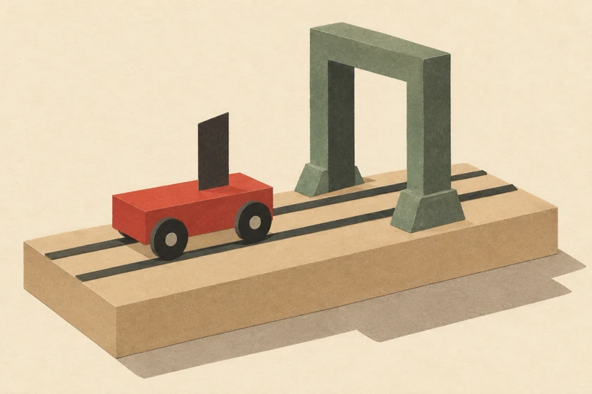

<!doctype html><html lang="en"><meta charset="utf-8"><meta name="viewport" content="width=device-width,initial-scale=1"><title>2 Force and Motion · DSE Physics Lab</title><script defer src="lab-nav.js"></script><link rel="stylesheet" href="topics.css"><main style="--accent:#92b5ad"><header><div><span class="tag">YD PHYSICS　/　02 / ME</span><h1>2 Force and Motion</h1><p lang="zh-HK">力與運動 · ME01–ME11</p></div></header><h2>ME01 · Motion<small lang="zh-HK">運動</small></h2><a class="tool" href="me01-ticker-tape-timer.html"><span>Ticker Tape Timer<small lang="zh-HK">打點計時器</small></span></a><a class="tool" href="me01-light-gate.html"><span>Light Gate<small lang="zh-HK">光閘</small></span></a><h2>ME02 · Motion Graphs<small lang="zh-HK">運動線圖</small></h2><a class="tool" href="instantaneous-velocity.html"><span>Instantaneous Velocity<small lang="zh-HK">瞬時速度</small></span></a><a class="tool" href="motion-graph-practice.html"><span>Interactive practice · Motion Graph Practice<small lang="zh-HK">運動線圖練習</small></span></a><h2>Topic guide<small lang="zh-HK">課題索引</small></h2><ul><li><b>ME01</b><span>Motion<small lang="zh-HK">運動</small></span></li><li><b>ME02</b><span>Motion Graphs<small lang="zh-HK">運動線圖</small></span></li><li><b>ME03</b><span>Equations of Motion<small lang="zh-HK">運動方程</small></span></li><li><b>ME04</b><span>Newton’s Laws<small lang="zh-HK">牛頓定律</small></span></li><li><b>ME05</b><span>Newton’s Laws II (Coplanar Forces)<small lang="zh-HK">牛頓定律 II（共面力）</small></span></li><li><b>ME06</b><span>Moment<small lang="zh-HK">力矩</small></span></li><li><b>ME07</b><span>Work, Energy and Power<small lang="zh-HK">作功、能量與功率</small></span></li><li><b>ME08</b><span>Momentum<small lang="zh-HK">動量</small></span></li><li><b>ME09</b><span>Projectile Motion<small lang="zh-HK">拋體運動</small></span></li><li><b>ME10</b><span>Circular Motion<small lang="zh-HK">圓周運動</small></span></li><li><b>ME11</b><span>Gravitation<small lang="zh-HK">萬有引力</small></span></li></ul><footer>Designed by Mr. Lai Ka Chun (LKU) · CPCYDSS</footer></main></html>